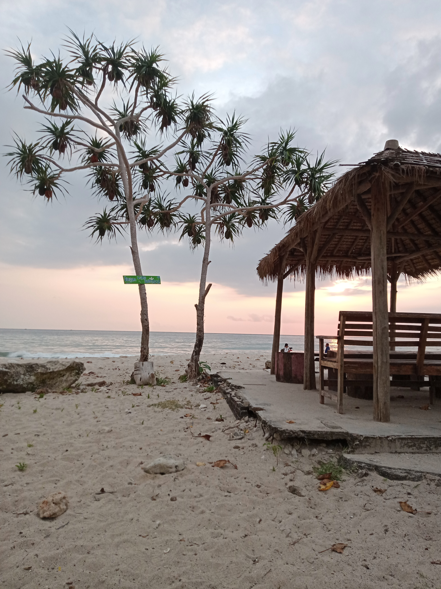
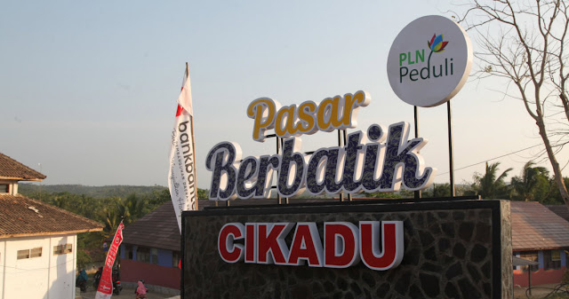

Top Selling
Top Destinations


 Kp. Cipenyu, Tanjungjaya
Kp. Cipenyu, Tanjungjaya

Kp. cikadu, Tanjungjaya
Profile Desa Tanjungjaya
Sejarah Desa Tanjungjaya
Pada jaman dahulu di desa Citeureup terdapat salah satu kampung yang bernama Kampung Kalicaah, yang jarak tempuhya diperkirakan ± 12 KM ke kantor Desa Citeureup Kecamatan Cigeulis Kewadanaan Cibaliung kabupaten DT II Pandeglang, dan satu-satunya tempat masyarakat mencari kebutuhan bahan pokok yang terdekat yaitu pasar Citeurep, dan hanya bisa ditempuh dengan jalan kaki dan jalan laut, jika masyarakat berjalan kaki harus meghabiskan waktu 2-3 jam di perjalanan dengan menyusuri jalan hutan, sungai kali jedang tanpa adanya jalur transfortasi (jalan setapak). Sehingga bila mana kali jedang tersebut sedang pasang dari jalur laut karena tidak adanya jembatan maka masyarakat harus menyebrangi sungai dengan berenang. Nama Tanjungjaya muncul untuk dijadikan nama Desa karena disebelah utara Ranca Lembang dan Ranca Reungit ada daratan yang menjolok ke lautan itu disebut Tanjung Lisung. Jika kita lihat dari pantauan udara dalam Monografi Desa Tanjungjaya seperti kepala Lesung. Maka dari Itu diberi nama TANJUNGJAYA oleh Penggagas pemekaran Desa Tanjungjaya. Yang mana harapannya adalah agar adanya perubahan dan Pelayanan kepada Masayarakat tidak Sulit. Desa Tanjungjaya adalah salah satu desa wisata edukasi yang terletak di destinasi Tanjung Lesung, Kabupaten Pandeglang, Indonesia. Desa Tanjungjaya merupakan desa yang dikelilingi oleh pantai dan perbukitan yang indah, yang dapat menjadi pilihan desa wisata yang menyenangkan dan menenangkan baik untuk wisatawan domestik maupun mancanegara. terdapat begitu banyak paket wisata yang tersedia mulai dari atraksi alam bahari, transplantasi terumbu karang, seni budaya sunda banten, dan kerajinan lokal yang menjadi ciri khas cinderamata Tanjung Lesung.

Testimonials
What people say about Us.
"desa tanjungjaya merupakan desa wisata yang terletak di destinasi tanjunglesung yang indah, yang dapat menjadi pilihan desa wisata yang menyenangkan dan menenangkan untuk wisatawan."
Amin Jaya
Angsana, Pandeglang
"Desa tanjungjaya merupakan daerah yang terdapat banyak titik destinasi wisata, salah satunya wisata Tanjung Lesung"
Sri Utami
Pulosari, Pandeglang
Map Location
All rights tanjungjaya.my.id